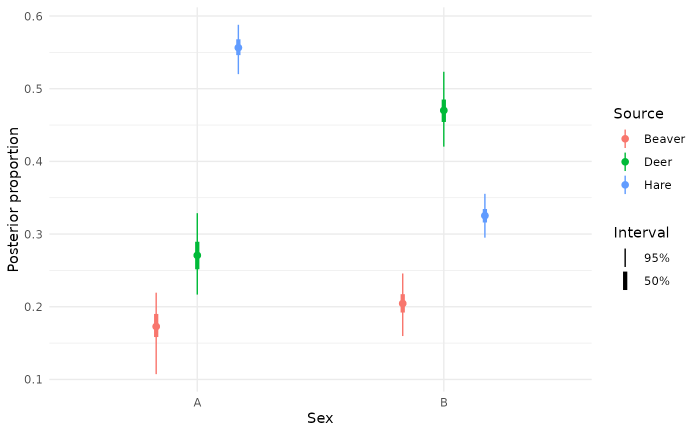

Conditional effects of covariates on source proportions or predicted mixture isotope values
Source:R/conditional_effects.R
conditional_effects.RdComputes posterior source proportions (method = "posterior_proportions",
the default) or expected/predicted mixture isotope values (method = "posterior_epred"/"posterior_predict") across the range (for a numeric
covariate) or levels (for a factor covariate) of one or two
fixed-effect covariates from formula, holding every other
fixed-effect covariate at a reference value (the mean, for numeric
covariates; the first level, for factors – overridable via
ref_conditions) and every group-level (random-effect) term at the
population-average level
(re_formula = NA by default, since the grid never varies grouping
columns). Printing or plot()-ing the result (requires ggplot2)
draws one plot per requested effect: a ribbon (numeric covariate) or
forest-plot-style linerange (factor covariate), with one or more
nested credible intervals (narrower drawn more prominently), faceted
by the second covariate when a two-way interaction is requested. For
method = "posterior_proportions", every source is shown together on
one plot (colour/fill); for "posterior_epred"/"posterior_predict",
isotopes are shown one at a time instead (see resp), since isotopes
don't share a common scale the way proportions do.
Usage
conditional_effects(
object,
effects = NULL,
ref_conditions = NULL,
int_conditions = NULL,
resolution = 100,
re_formula = NA,
robust = FALSE,
probs = c(0.5, 0.95),
point_size = 2,
method = c("posterior_proportions", "posterior_epred", "posterior_predict"),
resp = NULL,
...
)
# S3 method for class 'bsimms_conditional_effects'
plot(x, plot = TRUE, ask = TRUE, ...)Arguments
- object
A
bsimms_fitobject (as returned bybsimm()).- effects
Character vector of fixed-effect covariate name(s) to vary (variable names in
formula, not dummy-coded column names).NULL(default) computes conditional effects for every term offormula's fixed-effect part, main effects and two-way interactions alike (e.g.~ var1 * var2gives conditional effects forvar1,var2, and their interactionvar1:var2); three-way and higher interactions are dropped from this default, since only two-way interactions are supported. An entry may name a two-way interaction as"var1:var2":var1is swept as usual (its range if numeric, its observed levels if a factor) and becomes the plot's x axis, whilevar2becomes the moderator – the plot is faceted overvar2's observed levels (factor) or a small set of representative values (numeric; seeint_conditions).- ref_conditions
Optional named list overriding the default reference value used to hold a fixed-effect covariate constant while another varies (any covariate currently neither swept nor used as a two-way interaction's moderator). Name each element after the covariate; the value is a single number (for a numeric covariate, replacing the default mean) or a single level (for a factor covariate, replacing the default of its first level). A covariate not named in
ref_conditionsuses the default.- int_conditions
Optional named list overriding the default representative values used for a two-way interaction's moderator (
var2in"var1:var2"; ignored for single covariates). Name each element after the moderator variable; the value is a numeric vector of representative values (for a numeric moderator, replacing the default mean and mean +/- 1 SD) or a character vector of levels to include (for a factor moderator, replacing the default of all observed levels). A moderator not named inint_conditionsuses the default.- resolution
Number of points spanning a numeric covariate's range (default 100). Ignored for factor covariates, which use their observed levels.
- re_formula
Which group-level terms to condition on; see
posterior_proportions(). Defaults toNA(population-average), since the prediction grid only ever varies fixed-effect covariates.- robust
Logical; if
FALSE(default) the point estimate is themean, ifTRUEthemedian.- probs
One or more credible-interval masses to display, e.g. the default
c(0.5, 0.95)draws both a 50% and a 95% interval (nested, narrower intervals drawn more prominently).- point_size
For factor covariates, the size of the point marking the central estimate (default 2). Ignored for numeric covariates.
- method
Which posterior quantity to compute and plot:
"posterior_proportions"(default, viaposterior_proportions()),"posterior_epred"(expected mixture isotope value, viaposterior_epred.bsimms_fit()), or"posterior_predict"(posterior predictive mixture isotope value, viaposterior_predict.bsimms_fit()); the latter two requirerstantools.- resp
For
method = "posterior_epred"/"posterior_predict", the isotope to plot (one ofisotope_names); required if the model has more than one isotope, since isotopes are shown one at a time rather than together (unlike sources, they don't share a common scale). Defaults to the only isotope otherwise. Ignored formethod = "posterior_proportions".- ...
For
conditional_effects(), further arguments passed to the underlyingmethodfunction, e.g.ndraws. For theplot()method, further arguments passed toggplot2::geom_ribbon()(numeric covariates) orggplot2::geom_linerange()(factor covariates).- x
An object returned by
conditional_effects().- plot
For the
plot()method, logical: display each plot as a side effect (defaultTRUE)? IfFALSE, the plots are only built and returned.- ask
For the
plot()method, logical: prompt the user before displaying each new plot after the first (defaultTRUE)? Only relevant ifplot = TRUEand there is more than one effect.
Value
conditional_effects() returns an object of class
bsimms_conditional_effects: a list of data frames, one per
covariate/interaction in effects, each with one row per (grid
point, category, interval width) and columns row, source/
isotope (depending on method), estimate, lower, upper,
width, the covariate's values, and (for a two-way interaction) the
moderator's values. The plot() method returns a list of ggplot
objects (one per covariate), invisibly; each is also displayed as a
side effect.
Examples
# \donttest{
sim <- simulate_bsimms_data(
~Sex,
n_mixture_obs = 10,
source_names = c("Beaver", "Deer", "Hare"),
isotope_names = c("d13C", "d15N"),
source_means_sds = TRUE,
n_levels = list(Sex = 2),
seed = 1
)
fit <- bsimm(
sim$formula,
mixture_data = sim$mixture_data,
source_data = sim$source_data,
tdf_data = sim$tdf_data,
isotope_names = sim$isotope_names,
source_means_sds = sim$source_means_sds,
tdf_means_sds = sim$tdf_means_sds,
conc_dep = sim$conc_dep,
error_structure = sim$error_structure,
source_col = sim$source_col,
chains = 2,
iter_warmup = 500,
iter_sampling = 500
)
#> Running MCMC with 2 sequential chains...
#>
#> Chain 1 Iteration: 1 / 1000 [ 0%] (Warmup)
#> Chain 1 Iteration: 100 / 1000 [ 10%] (Warmup)
#> Chain 1 Iteration: 200 / 1000 [ 20%] (Warmup)
#> Chain 1 Iteration: 300 / 1000 [ 30%] (Warmup)
#> Chain 1 Iteration: 400 / 1000 [ 40%] (Warmup)
#> Chain 1 Iteration: 500 / 1000 [ 50%] (Warmup)
#> Chain 1 Iteration: 501 / 1000 [ 50%] (Sampling)
#> Chain 1 Iteration: 600 / 1000 [ 60%] (Sampling)
#> Chain 1 Iteration: 700 / 1000 [ 70%] (Sampling)
#> Chain 1 Iteration: 800 / 1000 [ 80%] (Sampling)
#> Chain 1 Iteration: 900 / 1000 [ 90%] (Sampling)
#> Chain 1 Iteration: 1000 / 1000 [100%] (Sampling)
#> Chain 1 finished in 0.2 seconds.
#> Chain 2 Iteration: 1 / 1000 [ 0%] (Warmup)
#> Chain 2 Iteration: 100 / 1000 [ 10%] (Warmup)
#> Chain 2 Iteration: 200 / 1000 [ 20%] (Warmup)
#> Chain 2 Iteration: 300 / 1000 [ 30%] (Warmup)
#> Chain 2 Iteration: 400 / 1000 [ 40%] (Warmup)
#> Chain 2 Iteration: 500 / 1000 [ 50%] (Warmup)
#> Chain 2 Iteration: 501 / 1000 [ 50%] (Sampling)
#> Chain 2 Iteration: 600 / 1000 [ 60%] (Sampling)
#> Chain 2 Iteration: 700 / 1000 [ 70%] (Sampling)
#> Chain 2 Iteration: 800 / 1000 [ 80%] (Sampling)
#> Chain 2 Iteration: 900 / 1000 [ 90%] (Sampling)
#> Chain 2 Iteration: 1000 / 1000 [100%] (Sampling)
#> Chain 2 finished in 0.3 seconds.
#>
#> Both chains finished successfully.
#> Mean chain execution time: 0.2 seconds.
#> Total execution time: 0.7 seconds.
#>
ce <- conditional_effects(fit)
plot(ce)

# }